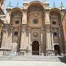

Moderado · Adrenalina
Moderado · Adrenalina
Sandboarding en Cerro Negro
León
Caminata hasta la cima del volcán más joven y descenso en tabla sobre ceniza negra a más de 50 km/h.
Viví Nicaragua a través de guías baqueanos locales: senderismo en cráteres, cañones milenarios, surfing salvaje y cosechas de café en las montañas.
Moderado · Adrenalina
Caminata hasta la cima del volcán más joven y descenso en tabla sobre ceniza negra a más de 50 km/h.
 Fácil / Moderado
Fácil / Moderado
Recorrido acuático y senderismo entre farallones rocosos de 150m con guías comunitarios certificados.
 Exigente · 8 Horas
Exigente · 8 Horas
Conquista el cono perfecto de 1,610 metros con vistas panorámicas 360° al Gran Lago Cocibolca.
 Fácil · Familiar
Fácil · Familiar
Viví el proceso de recolección, despulpado y catación artesanal con familias cafetaleras campesinas.
 Fácil · Relajante
Fácil · Relajante
Remo suave entre canales volcánicos, avistamiento de aves acuáticas y visita a fortalezas históricas.
 Todos los niveles
Todos los niveles
Olas constantes de clase mundial, alquiler de tablas e instrucción personalizada con instructores locales.

Fácil / ModeradoCaminata por el bosque nuboso entre fumarolas activas, orquídeas y miradores hacia el Lago de Nicaragua.
 Fácil · Acuático
Fácil · Acuático
Aguas turquesas del Caribe, tiburones nodriza, rayas águila y jardines de coral virgen con pescadores raizales.
Ofertas diseñadas por hoteles, restaurantes, guías locales y cooperativas comunitarias registradas. Incluyen transporte, itinerario guiado y precios oficiales en Córdobas (C$).
Circuito que conecta el microclima fresco de El Crucero con la costa del Pacífico en Pochomil. Incluye transporte, recorrido guiado, hospedaje, alimentación y actividades de sol y playa.
Circuito histórico y cultural: Centro Histórico, Loma de Tiscapa, Antigua Catedral, Parque Central, Palacio Nacional de la Cultura, Paseo Xolotlán y Puerto Salvador Allende.
Caminata nocturna de 45 minutos por el Sendero El Cráter. Observación de fauna nocturna, salamandra del Mombacho, aves dormidas, insectos bioluminiscentes y vistas iluminadas de Granada.
Inmersión histórica y fluvial: Fortaleza de la Inmaculada Concepción, historia colonial de Rafaela Herrera, poblado ribereño de El Castillo y naturaleza tropical sobre el río.
Expedición de aventura en la cordillera norteña con el equipo local Zipote Vago Tours. Farallones, senderismo de montaña, pozas naturales y gastronomía tradicional segoviana.
Islotes coralinos vírgenes en el Mar Caribe. Salida desde Laguna de Perlas, transporte acuático seguro con chalecos, arrecife de coral, desayuno criollo, almuerzo caribeño y kayaks.
Conectando el Gran Lago Cocibolca con el Caribe a través de cuatro grandes rutas de navegación, historia viva, biodiversidad y convivencia con pueblos originarios Rama.
La legendaria ruta interoceánica de la fiebre del oro del siglo XIX: Managua → San Juan del Sur → Río San Juan → El Castillo → Greytown → Reserva Indio Maíz.
Navegación fluvial & selvaEl comercio colonial español, las fortificaciones ribereñas y la gesta del Desaguadero. Incluye la Fortaleza Inmaculada Concepción, museos y poblado de El Castillo.
Historia militar y baluartesAviturismo en los humedales de San Carlos, San Miguelito, Solentiname y Refugio Los Guatuzos. Garzas, martín pescador, espátulas rosadas y loras frentirrojas.
Avistamiento temprano en kayakExploración de la Reserva Biológica Indio Maíz y Bartola. Selva tropical primaria, caimanes/cuajipales, monos congo, manatíes y ceibas milenarias con baqueanos.
Guía nativo obligatorioAlojamiento comunitario y convivencia directa con familias del pueblo originario Rama. Recorridos guiados por líderes ancestrales a través de formaciones de basalto columnar, aguas termales medicinales y senderos vírgenes.